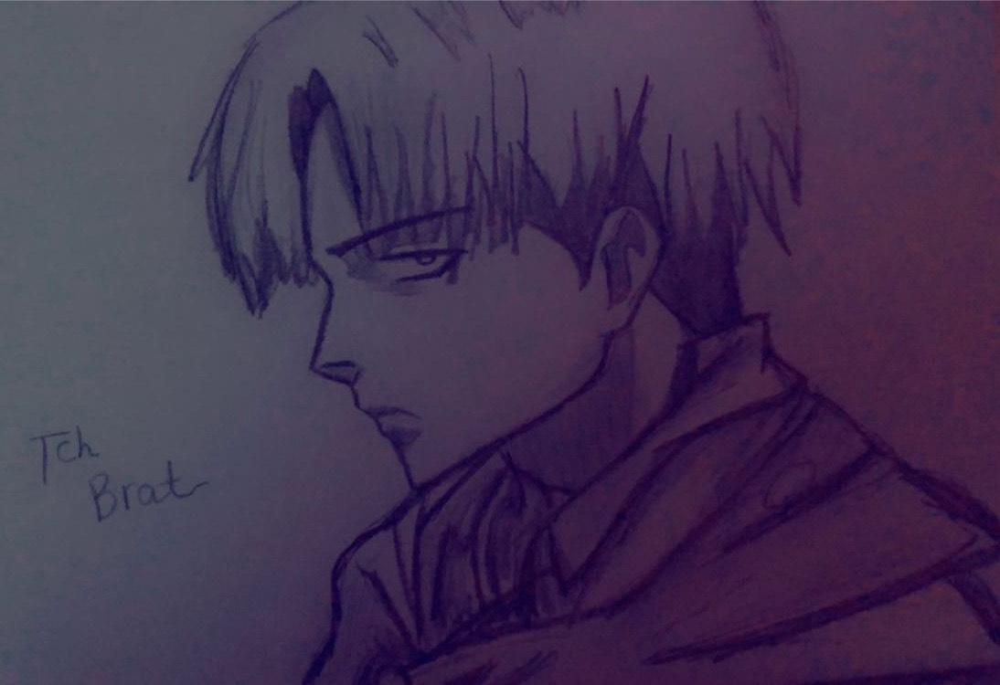
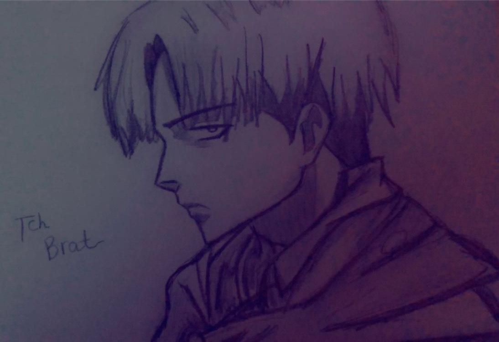

PORTFOLIO
This portfolio is aimed at submitting for an IT job as a potential employer. In this portfolio i am going to be showcasing my skills, including what i'm also like outside of work what are my hobbies. This Portfolio is easy to navigate around and my hobbies are listed down below. This includes photos and links to videos too. The work experience i've had so far is at WHSmith(2019) stocking shelves and helping customers, around over 40 hours also Graphic Design/Games Design virtual work(2020/2021). This portfolio also uses other context pages from the navbar to give you more information if needed.
HOBBIES
This section will give you information in what I do in my free time, this will include links to some videos and photos of my work. The number one skill I have learnt from this is editing, may that be for photos and videos, its given me more concentration and patience as editing can be difficult if you're not sure on what to do and where to look. I've learnt about layers in editing software, and different painting tools on what gives the best detail to editing videos by adding music in or simply shortening the video. I have spent hours on editing for me to be quite skilled so when being introduced to a new editing software it doesn't take me too long to understand as I consider myself a quick learner. As with coding, i grew up around computers, xbox's, playstations and others, at a young age i got taught how to mod games and how to code them to make a mod. I have done digital art on the computer, that being models and drawings, which can also take a lot of patience but i am very motivated to do my work when i need too. I enjoy working alone but also in groups when im comfortable with the atsmophere i'm in. So heres the work i've done so far:


ARTWORK
I usually do Anime type of style drawings, as I really like the cartoonish style and can be challenging when it needs to be. My goal is to hopefully be the artwork creator of a certain character for a game.
 



ABOUT ME
Hello :) I'm Katelyn
As you can tell by this Portfolio i'm very passionate about gaming and drawing in my free time. Gaming I usually like getting achievements and when it comes to drawing I like to finish the project as soon as I can, when I put my mind to something I focus on it as much as i possibly can. When in drawing, I've tried paper and digital, but as long as I have the inspiration I get it more quickly done. I'd love to be part of a game in the future, may that be the artwork for the characters or the plot of a story, I'd even love to be a game tester as a side job. What i'd offer to the job is my creativity and independence to the workplace, also how reliable I can be. I am very organised and motivated to do my work. I have good leadership and interpersonal skills. :)
Phone: +00 151515
Email: mail@mail.com